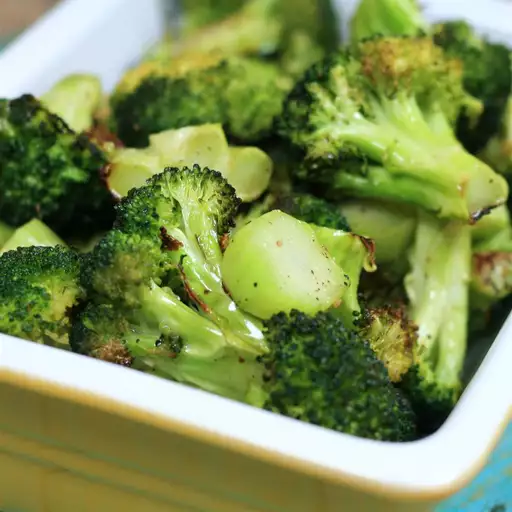

Peri Peri Sandwich
My company had a Mardi Gras party and I wanted to make a flavorful red beans and rice recipe that everyone would love!
Ingredients
- 1 pound smoked sausage, sliced
- 1 onion, chopped, divided
- green bell pepper, chopped, divided
- 2 cups water
- 2 cubes chicken bouillon
- 1 tablespoon salt-free garlic and herb seasoning (such as Mrs. Dash®)
- 1 tablespoon Cajun seasoning blend
- 1 teaspoon red pepper flakes
- 1 bay leaf
- 3 (16 ounce) cans kidney beans, drained and rinsed
- 1 (14.5 ounce) can diced tomatoes
- salt to taste
- 3 cups cooked white rice
Directions
- Combine sausage, half the onion, half the green bell pepper, half the jalapeno pepper, water, chicken bouillon, garlic and herb seasoning, Cajun seasoning blend, red pepper flakes, and bay leaf in a large stockpot; Bring to boil and cook, stirring occasionally, until liquid is reduced by half, 15 to 20 minutes.
- Mix kidney beans, tomatoes, remaining onion, remaining green bell pepper, and remaining jalapeno pepper into the sausage mixture; season with salt. Bring to a boil, reduce heat, and simmer until kidney bean mixture is thickened, 15 to 20 minutes. Remove and discard bay leaf.
- Spoon 1/2 cup cooked rice into 6 serving bowls; top with kidney bean mixture.
Easy Roasted Broccoli

Roasted broccoli is easy to make and so much more flavorsome than boiled. My favorite part is the roasted sliced stem pieces.
Ingredients
- 14 ounces broccoli
- 1 tablespoon olive oil
- salt and ground black pepper to taste
Directions
- Preheat the oven to 400 degrees F (200 degrees C).
- Cut broccoli florets from the stalk. Peel the stalk and slice into 1/4-inch slices. Mix florets and stem pieces with olive oil in a bowl and transfer to a baking sheet; season with salt and pepper.
- Roast in the preheated oven until broccoli is tender and lightly browned, about 18 to 20 minutes.
Homemade BBQ Sauce
This recipe has a lot of sweetness and spice, so if you're looking for a classic homemade BBQ sauce that's easy to make, look no further. It is very popular with users of 'ceramic' type smokers and grills, (i.e. Primo, Kamado, Big Green Egg, etc.)
Ingredients
- 1 ½ cups brown sugar
- 1 ½ cups ketchup
- ½ cup red wine vinegar
- ½ cup water
- 1 tablespoon Worcestershire sauce
- 2 ½ tablespoons dry mustard
- 2 teaspoons paprika
- 2 teaspoons salt
- 1 ½ teaspoons black pepper
- 2 dashes hot pepper sauce
Directions
- Combine brown sugar, ketchup, vinegar, water, and Worcestershire sauce in a blender. Season with mustard, paprika, salt, pepper, and hot pepper sauce. Blend until smooth.